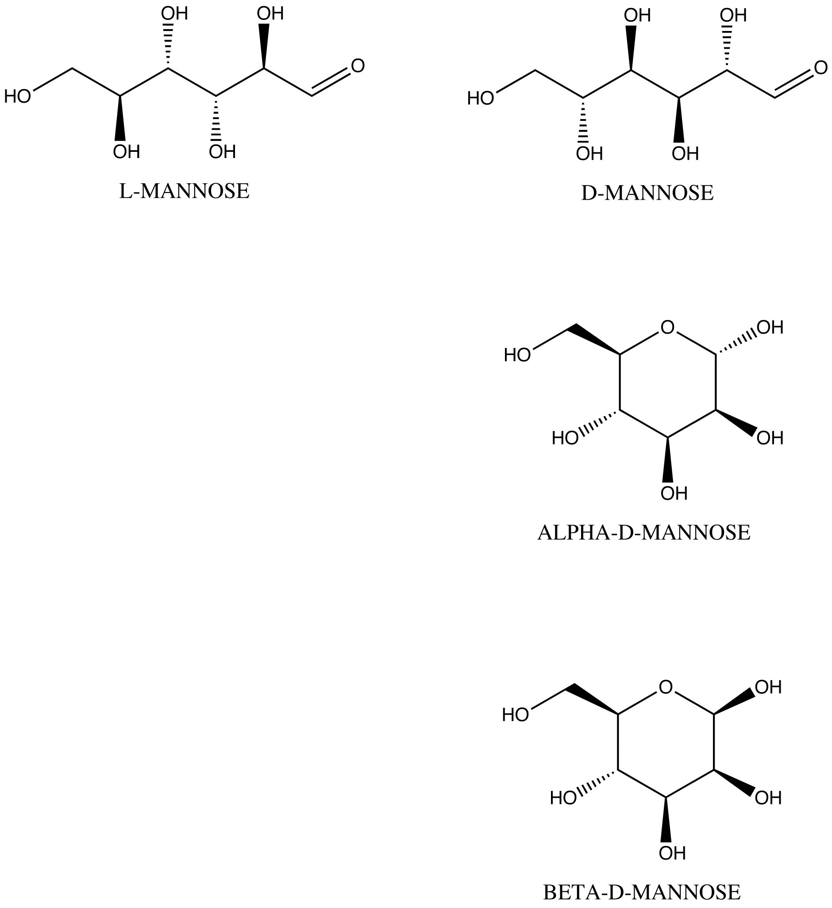
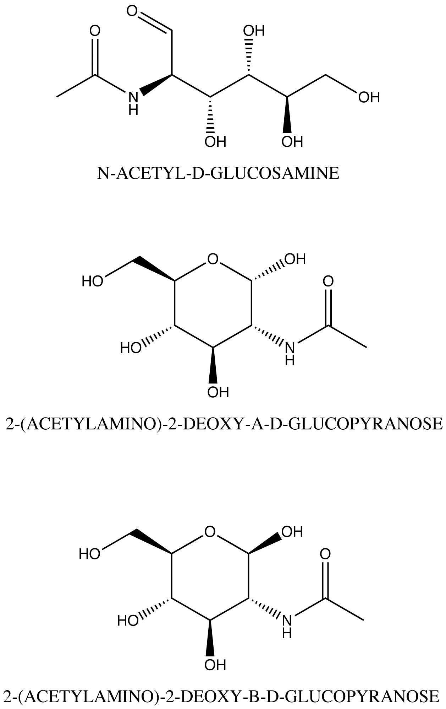

A carbohydrate is an organic compound with the empirical formula Cm(H2O)nwhere m could be different from n. Synonym of saccharide. Saccharides have several characteristics that differentiate them. These include
- placement of carbonyl group
- length of the carbon chain
- sequence of chiral centres
- handedness of the molecule
- linear or cyclic
Cyclic saccharides are classified as alpha or beta isomers based on the position of the OH on the anomeric carbon relative to the large group on the ring.

|
If your protein was produced in an insect or yeast cell line, you should only have NAG and MAN sugars, otherwise you should look at both types of PDB files to see which fits the density better (if you have any density past the main, five sugar core).
Mannose is a common saccharide in protein chemistry. There are two linear isomers and two cyclic forms of each. The PDB code for each is different because of the different restraints require for each. A leading form of error in protein models with carbohydrates is the use of the three-letter code, MAN, which is for the alpha-D-mannose when that vast majority of units in saccharides are beta-D-mannose or BMA.

NAG represents the beta form (the most common) and NDG is the alpha form. NAG is interesting because it's a saccharide with a substitute attached to the C2 carbon.

Saccharides polymerise into tree like structures that covalently bind to proteins. The links between are generally between the anomeric carbon and an oxygen on the "preceding" units moving from the protein outwards on the chain. Consider the disaccharide, lactose.
Note that the left saccharide is linked with its anomeric carbon via an oxygen to the C4 carbon. The left unit is β-D-galactose and the right is glucose. The link is known as β-(1-4) because the "attaching" unit is β and the it links C1 to C4.
The most common link to proteins is the n-link which attaches to ASN in the ASN-X-SER/THR motif.